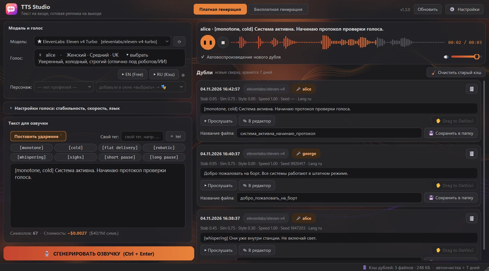
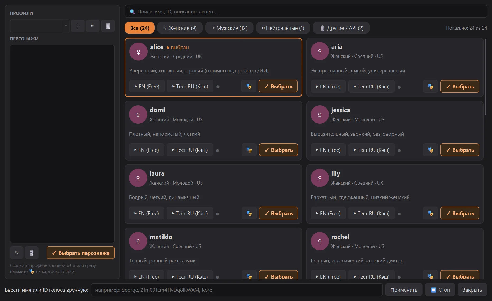

Windows · ElevenLabs v4 через OpenRouter
Написали реплику. Послушали три дубля. Лучший перетащили прямо на таймлайн DaVinci. Всё в одном окне, без вкладок и API-консоли.

// режиссура текстом
Теги задают подачу, а ударение ставится одной кнопкой, и «за́мок» больше не превратится в «замо́к». Не понравилось? Сдвиньте ползунок и снимите новый дубль: старый останется в ленте.
// между текстом и таймлайном
Каждая попытка лежит в ленте вместе с настройками. Кликнули по старому дублю — текст, голос и ползунки вернулись в редактор.
Сохранили дубль и тащите его мышью на дорожку. Никаких «куда же оно скачалось».
От −14 LUFS для YouTube до −23 для ТВ, с лимитером пиков. Тихие, средние и громкие можно раскладывать по разным папкам.
Под настроение и под монтажную. Меняются мгновенно, без перезапуска.
Кэш сам убирает старые попытки, а сохранённые файлы остаются в вашей папке.
Передайте соседние фразы как контекст, и реплики зазвучат одним дыханием, а не набором кусков.
Seed записывается в дубль. Удачную интонацию можно взять за основу следующей реплики.
Отдельная вкладка с бесплатными движками: VoxCPM2, Qwen3-TTS, Chatterbox и Gemini. Эмоции задаются словами или ползунком. Это публичные сервисы, у них бывают дневные лимиты и перебои.
Бесплатные дубли не смешиваются с платными: у них свой текст, плеер, лента и папка.
Плеер показывает настоящую форму волны дубля. Кликните по ней, чтобы сразу перейти к нужному месту.
Свои папки для озвучки и кэша, анимации можно выключить, а классический интерфейс включается одним кликом.
// кастинг
Прослушайте бесплатный английский сэмпл и русский, который генерируется один раз и остаётся в кэше. Сохраните находку как персонажа: при выборе вернутся и голос, и настройки.

// семь настроений
// обновления
Ни браузера, ни установщика. Программа сама скачает новую версию, заменит себя и откроется снова. Настройки, ключ, дубли и текст в редакторе останутся на месте.
// старт за минуту
Запустите TTS-Studio.exe откуда удобно. Папки для озвучки и кэша можно выбрать в настройках, рабочий стол программа не засоряет.
Нужен API-ключ OpenRouter. Генерация оплачивается там же, по тарифам выбранной модели. Для бесплатной вкладки ключ OpenRouter не нужен.
Выберите голос, напишите текст и нажмите Ctrl + Enter.
Если Windows покажет SmartScreen: программа пока не подписана сертификатом. Нажмите «Подробнее», затем «Выполнить в любом случае». Исходный код открыт, сборка идёт на GitHub Actions.
Где хранится ключ: в config.json в папке %LOCALAPPDATA%\TTS Studio, в открытом виде. Не передавайте этот файл другим людям. На сервер ключ уходит только в OpenRouter.